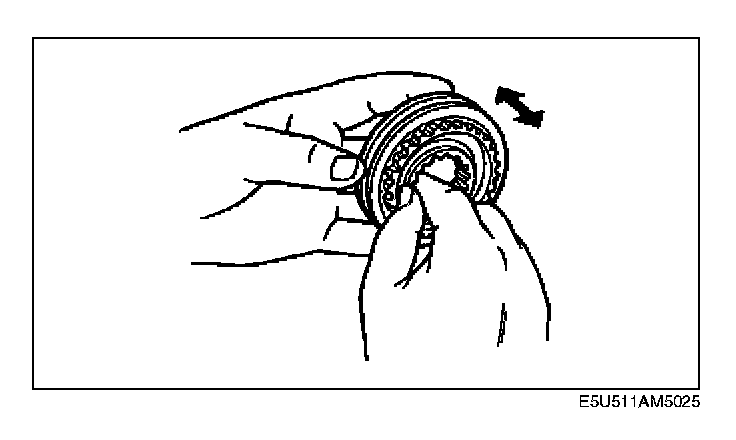

Clutch Hub Component Inspection
Clutch Hub Component Inspection
1. Inspect the following, and replace the clutch hub component if necessary.
^ Clutch hub sleeve and hub operation.
^ Individual gear teeth for damage, wear, and cracks.
^ Synchronizer keys for damage, wear, and cracks.